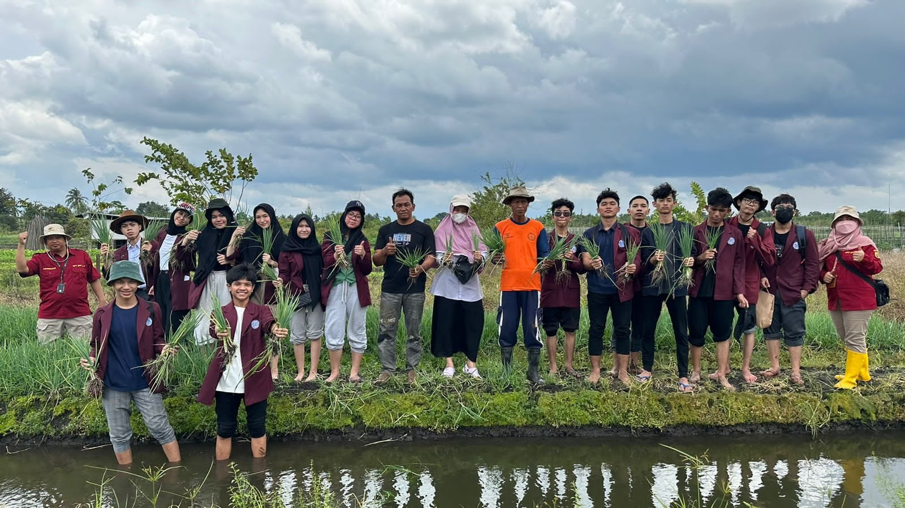
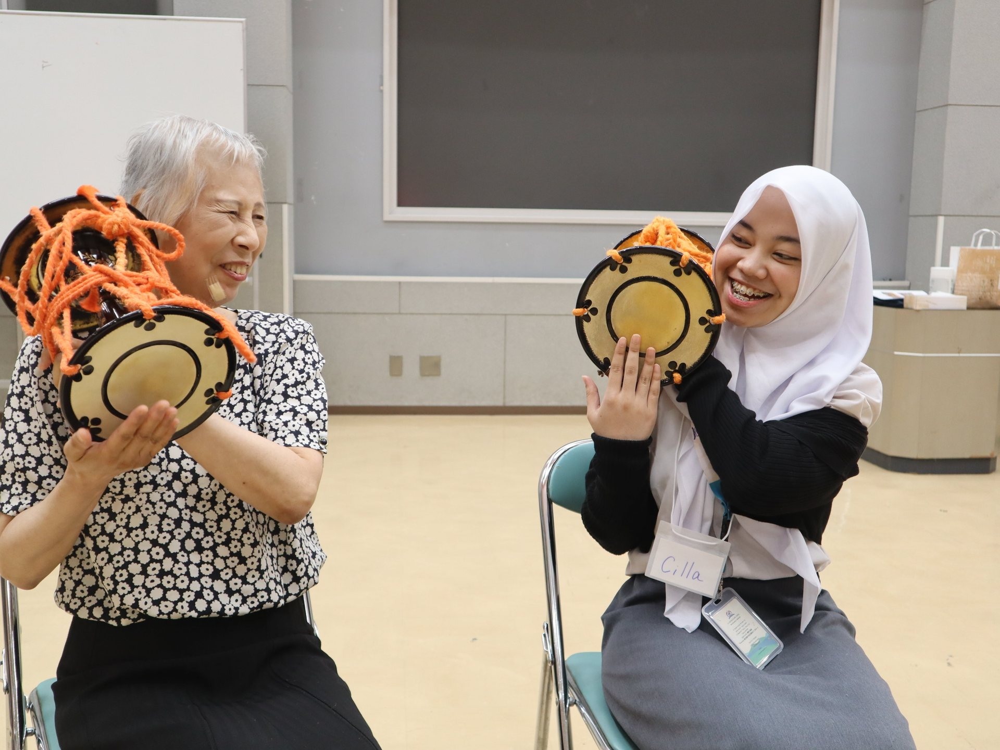
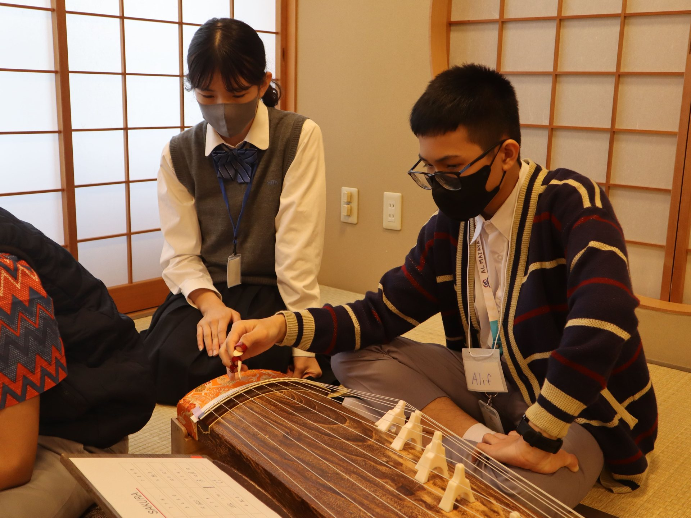
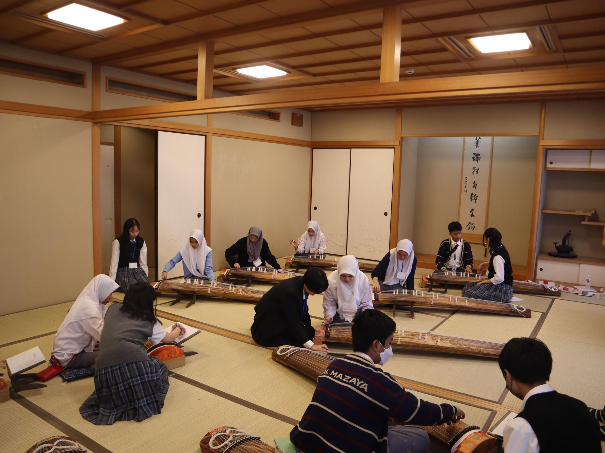

Islamic Studies
Islamic Studies
Pillar 01
The Foundation That Guides
A strong understanding and appreciation of Islamic values guide every step of students' learning.
"Al Mazaya" means excellence. An adab school shaping an excellent and noble Islamic generation.
Al Mazaya shapes an Islamic generation that excels in character and intellect — under the Al Mazaya Pelita Asia Foundation (YAPA) with a one-stop education services concept, from early childhood through to secondary.
From a single level toward a complete educational ecosystem — scroll to journey through each chapter.
Our journey begins with the founding of the Junior High school, then under the Swadaya Insan Cendekia Foundation (YSIC).
 Junior High First Cohort Photo
Junior High First Cohort PhotoThe senior high level is launched, expanding services and strengthening the continuity of student education under one roof.
 Senior High Students Photo
Senior High Students PhotoA new chapter begins with the establishment of the Al Mazaya Pelita Asia Foundation (YAPA), formerly the Swadaya Insan Cendekia Foundation (YSIC).

Foundation Office PhotoEducation services expand into early childhood education through KB-TK MMI Al Mazaya.
 KB-TK MMI Al Mazaya Photo
KB-TK MMI Al Mazaya PhotoAs part of building a complete educational journey, the elementary level is planned.

SD Al Mazaya IllustrationDates are the official version from the school.
“Shaping an Islamic generation that is Excellent in Character and Intellect.”
Strong Islamic character as the foundation of life · intellect to compete globally.
The four pillars complement one another and are applied in an integrated way across the student experience.
Islamic StudiesA strong understanding and appreciation of Islamic values guide every step of students' learning.

Character BuildingGood character, independence, and noble conduct are cultivated in daily school life, not only in the classroom.
“The pillars aren't separate — four pillars complement one another in one complete learning experience.”
— Al Mazaya Education Principle
Academic ExcellenceAcademic excellence is developed through a quality, creative, and critical learning culture, so intellectual potential unfolds.
English DevelopmentEnglish proficiency is trained to face an ever-evolving world, from early years through secondary.
Education is not only about what is learned, but how students behave and grow each day. Five core values shape the character we cultivate.
Speaking and acting truthfully in every situation.
Honouring rules and time as respect for the process.
Completing tasks diligently and with full awareness.
Being self-reliant and not dependent on others in learning.
Bold to start and take the first step proactively.
Polite & Courteous — manners in everyday lifeThese five values come alive through daily rituals that shape a positive, orderly, and mutually respectful environment.
The 5S & 5R culture fosters a positive, orderly, and mutually respectful learning environment.